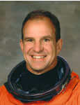

Lyndon B. Johnson Space Center
Houston, Texas 77058
|
National Aeronautics and Space Administration Lyndon B. Johnson Space Center Houston, Texas 77058 |
 |
Biographical Data |
||
MICHAEL J. Bloomfield (Colonel, USAF, RET.)
NASA Astronaut (Former)
PERSONAL DATA: Born March 16, 1959, in Flint, Michigan. Considers Lake Fenton, Michigan, to be his hometown. Married to the former Lori Miller. They have two children. He enjoys reading, gardening, all sporting activities including running, softball, skiing, and any activity with his children. His parents, Rodger and Maxine Bloomfield, reside in Linden, Michigan. Her parents, Dave and Donna Miller, reside in Albuquerque, New Mexico.
EDUCATION: Graduated from Lake Fenton High School, Fenton, Michigan, in 1977. Bachelor of science degree in Engineering Mechanics from the U.S. Air Force Academy, 1981. Masters in Engineering Management from Old Dominion University, 1993.
ORGANIZATIONS: Member of the United States Air Force Academy Association of Graduates, and the Air Force Association.
SPECIAL HONORS: Captain, 1980 United States Air Force Academy Falcon Football Team. Voted to the 1980 WAC All-Academic Football Team. Commanders Trophy winner as top graduate from Air Force Undergraduate Pilot Training (1983). Distinguished Graduate of USAF Test Pilot School Class 92A.
EXPERIENCE: Bloomfield graduated from the USAF Academy in 1981. He completed Undergraduate Pilot Training at Vance Air Force Base (AFB), Oklahoma, in 1983, and was selected to fly the F-15. From 1983 until 1991, he served as a combat ready pilot and instructor pilot in the F-15 at Holloman AFB, New Mexico, Bitburg Air Base Germany, and Langely AFB, Virginia. He completed the F-15 United States Fighter Weapons Instructor Course in 1987. In 1992 he attended the USAF Test Pilot School and was honored as a distinguished graduate. He remained at Edwards AFB, California, where he conducted tests in all models of the F-16.
NASA EXPERIENCE: Selected by NASA in December 1994, Bloomfield reported to the Johnson Space Center in March 1995. He worked as Chief of Safety for the Astronaut Office, Chief Instructor Astronaut, Director of Shuttle Operations, and Chief of the Shuttle Branch which oversees all Shuttle technical issues for the Astronaut Office. His last NASA position was Deputy Director, Flight Crew Operations, overseeing the Astronaut Office and flying operations at Ellington Field. A veteran of three space flights, STS-86 (1997), STS-97 (2000) and STS-110 (2002), he has logged over 753 hours in space. Bloomfield left NASA in August 2007 to pursue a career with ATK.
SPACE FLIGHT EXPERIENCE: Pilot of STS-86, flown on the shuttle Atlantis (September 25 to October 6, 1997), the 7th mission to rendezvous and dock with the Russian Space Station Mir. Highlights included the exchange of U.S. crew members Mike Foale and David Wolf, a spacewalk by two crew members to retrieve four experiments first deployed on Mir during STS-76, the transfer to Mir of 10,400 pounds of science and logistics, and the return of experiment hardware and results to Earth. Mission duration was 169 orbits in 10 days, 19 hours and 21 minutes, and covered more than 2.2 million miles.
Pilot of STS-97, flown on the shuttle Endeavour (November 30 to December 11, 2000), the 5th Space Shuttle mission dedicated to the assembly of the International Space Station. While docked to the Station, the crew installed the first set of U.S. solar arrays, performed three space walks, in addition to delivering supplies and equipment to the station’s first resident crew. Mission duration was 10 days, 19 hours, 57 minutes, and traveled 4.47 million miles.
Commander of STS-110, flown on the shuttle Atlantis (April 8-19, 2002), the 13th Shuttle mission to visit the International Space Station. Mission milestones included the delivery and installation of the SO (S-Zero) Truss, the first use of the station’s robotic arm to maneuver spacewalkers, and the first time that all of a shuttle crew’s spacewalks were based from the station’s Quest Airlock. The crew prepared the station for future spacewalks and spent a week in joint operations with the station’s Expedition-4 crew. Mission duration was 10 days, 19 hours and 42 minutes.
SEPTEMBER 2007
{kind=link}